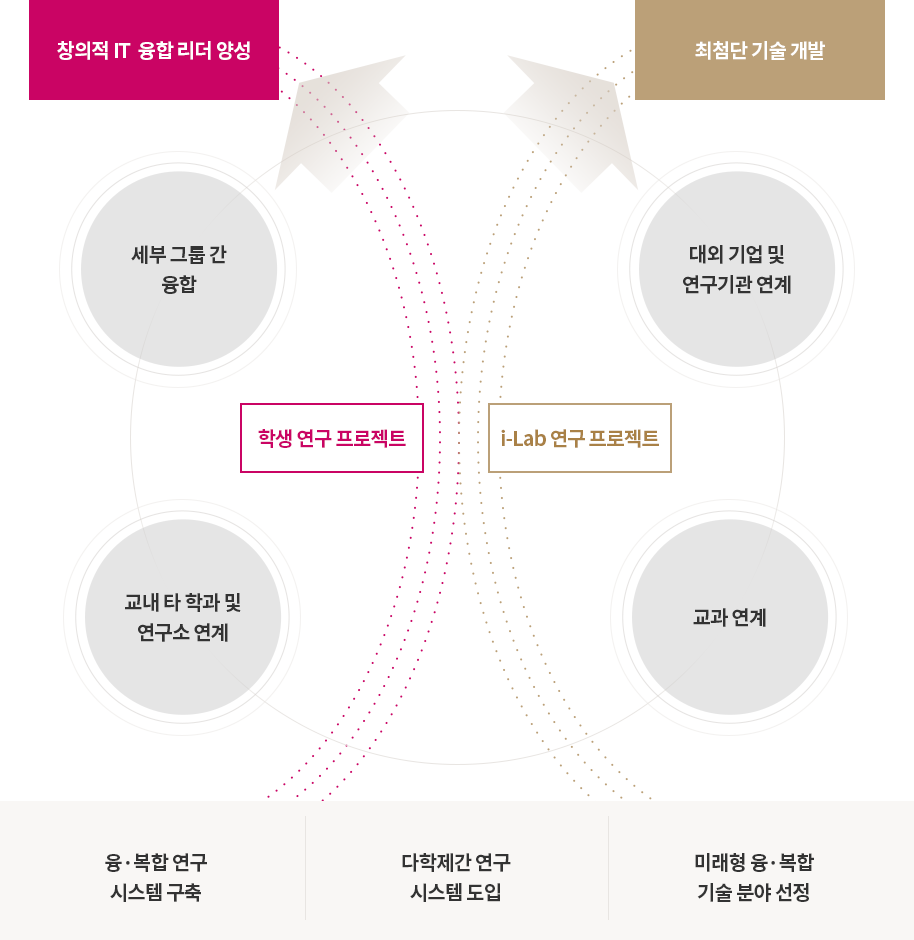

@@include('sub_visual.html',{
"title" : "연구과제",
"type" : "type4",
"sub_menu" : "연구"
})
창의적인 창의 연구 체계
-
창의 연구 개발 및 창의 리더 양성을 위한 체계
- i-Lab 창의/혁신 과제와 학생 연구 과제의 Two Track 기반으로 미래형 융·복합 최첨단 기술 개발에 초점을 맞춘 창의적 연구 체계
- IT를 기반으로 인문/사회/예술/과학/공학/의학 기술을 창의적으로 융·복합하여 Smart Solution 개발을 목표로 함

-
- 학생 연구 프로젝트
- 세부 그룹 간 융합
- 교내 타 학과 및 연구소 연계
창의적 IT 융합 리더 양성
-
- i-Lab 연구 프로젝트
- 대외 기업 및 연구기관 연계
- 교과 연계
최첨단 기술 개발
- 융·복합 연구 시스템 구축
- 다학제간 연구 시스템 도입
- 미래형 융·복합 기술 분야 선정
연구 과제 분류
-
창의과제
- i-Lab/CiTE에 설립취지에 부합하며 “New Frontier” 분야를 개척할 수 있는 High Risk, High Impact, High Return의
융합 연구 과제
- 인문/사회/예술/과학/공학/의학 기술의 융·복합연구의 동반 상승효과를 거두기 위해 다수의 교수가 참여하며, 타 대학, 연구소, 기업 등과 공동
연구를 수행하는 과제
- IT분야가 아니더라도 i-Lab/CiTE의 교육 및 연구의 수월성을 추구하는 도전적인 과제
-
혁신과제
- 세계IT시장을 주도할 수 있는 제품·서비스 및 산업 창출이 가능한 단기 핵심 연구 과제
- i-Lab연구과제와 학생/창의과제를 기반하여 원천기술을 확보하고 기술최적화를 통한 사업화 가능성이 있는 과제
-
학생과제
- "미래IT산업을 이끌어 나갈 창의 인재 양성”이라는 창의IT융합공학과(CiTE)의 설립 취지에 따라 CiTE 학생들이 자유롭게 창의력을 발휘하는 연구과제
- PGS를 기반으로한 학생의 아이디어를 연구를 통해 현실화하고 검증할 수 있는 실험적 과제
- 창의적이고 선도적인 연구 성과 창출이 목표이며 IT 리더 양성을 위해 학생 중심의 연구 테마 기획 및 수행
- 교육과 연구의 유기적 융합을 통한 새로운 지적 활동을 기반으로 과학과 공학 및 인문사회의 상호작용을 통해 생산물을 창조하는 연구 과제